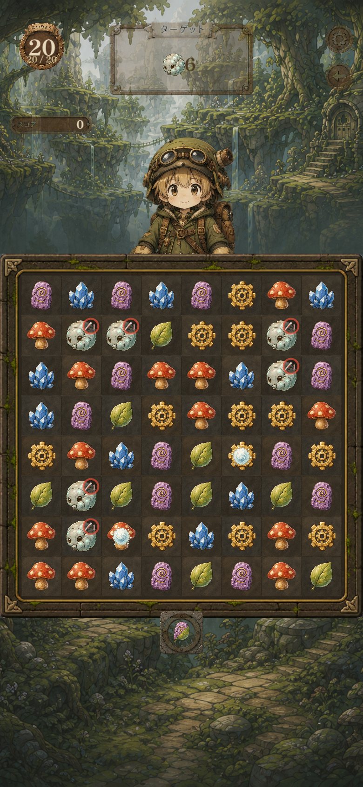
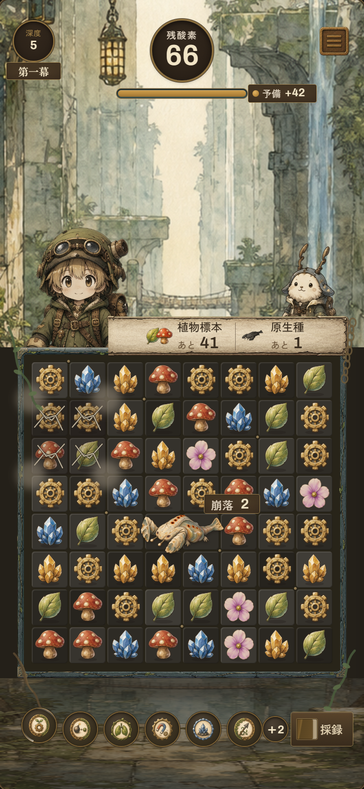

| 項目 | 現状 | モック v4 |
|---|---|---|
| 縦の配分 | 環境帯 35.2%／盤 45.3% | 環境帯 44.0%／盤 41.9%／下帯 14.0%（一次資料A案と一致） |
| 課目の表記 | 植物標本 9 / 50（分数）・掃討 0 / 1 | 植物標本 あと 41／原生種 あと 1（残数・羊皮紙1枚に同居） |
| 原生種 | 黒い丸＋正面2眼＋赤い体力バー。1マス | 崩れ穿ち＝横2マス。眼は無く、測定髭が予告地点へ揃う |
| 兆候 | 盤の外の別札に「あと2手 掘削」 | 体の脇に「崩落 2」。予告は矢印でなく亀裂のハッチングと岩粉 |
| 酸素 | 高さ 60px の橙バー（S 78%）の上に数字を直置き | 数字は円形メダリオンへ。ゲージは高さ 20px・空トラフは緑青 |
| HUD の地 | 上端を横断する板が風景を分断 | 板を持たず、札とメダリオンが風景の上に浮く（背景は上端まで連続） |
| 盤 | セルの分節・受光辺・接地影がいずれも無い | 受光辺 8px／接地影 52px／セルごと ±13 luma のムラ／リベット7点は不揃い |
| キャラ | 中央に単体。下端はアルファでフェード | 左 1/3 に探窟家＋右に相棒の2体1組。盤の上辺でハード遮蔽 |
| 語彙 | 裂坑掘り／野帳／掃討 | 崩れ穿ち／採録帖／原生種（第2フェーズ確定語） |
| 数字 | 明朝 ExtraBold＋黒縁。プロポーショナル | Archivo 600 等幅ライニング。stroke 全廃、地との Δluma 152〜192 |
| S≧45% 画素の面積 | 26.7%（基準 ≤14%） | 12.7% |
| 明部（V≧85%）の彩度 | 40.0%（基準 ≤22%） | 18.7% |
| 画面全体の平均彩度 | 36.0%（基準 ≤32%） | 27.2% |